This codelab will introduce you to the key concepts to creating your own watch face for Android Wear. It will then walk you through customising an analog watch face. There is also a bonus section on using the palette API to automatically choose a color for the watch face if you have the time. By the end of the codelab, you’ll have a customized watch face that you can call your own.
Concepts and setup
In this codelab, you’ll learn how to quickly create a watch face for Android Wear. At the end of the codelab, you can expect to have a watch face you can call your own.
Concepts
To start off let’s learn a little bit about Android Wear and its most prominent UI element - the watch face.
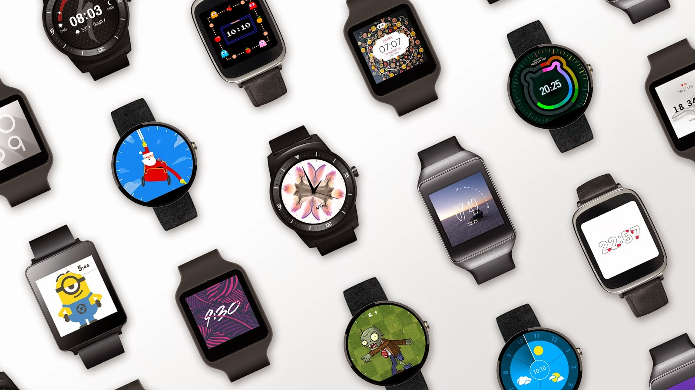
Android Wear is a wearable platform designed for small, powerful devices, worn on the body. It is designed to deliver useful information when you need it most, intelligent answers to spoken questions, and tools to help reach fitness goals.
Being such a personal device, style is a big part of it. Aside from offering a choice of manufacturers, customisable watch faces give users even more ways to express their personal style. This is what we are going to create today.
A watch face is essentially a native service that runs in the background on an Android Wear device. Within this service, there is an engine that renders each screen. You can think of this as an animator flipping through a book of moving cartoon drawings. Our code will fill each of these pages, making the watch face move.
So let’s get started!
For Google I/O 2015, you can find the sample code inside io2015-codelabs on the desktop, and then wear/watchface. Before you start, open that folder.
Clone the starter project repo
To get you started as quickly as possible, we have prepared a starter project for you to build on. It contains some basic code and application settings necessary for building watch faces. If you have git installed (you can check by typing git --version in the terminal / command line and see if executes correctly).
git clone https://github.com/googlesamples/android-codelab-watchface.git
If you do not have git you can get the project as a zip file:
Import the project
Start Android Studio, and select “Open an existing Android Studio project” from the Welcome screen, open the project directory and double click on the build.gradle file in the watchface directory:
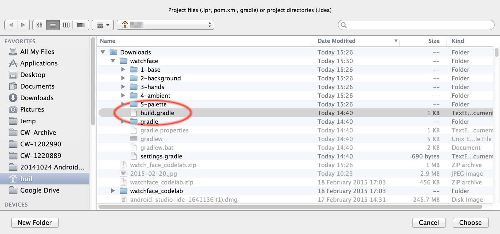
Click OK on "Import Project from Gradle" screen without making any changes.
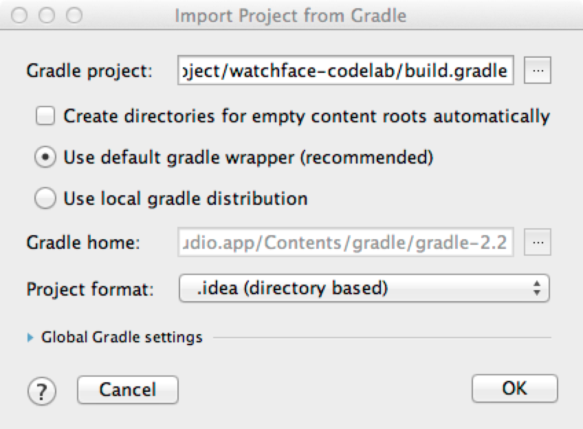
In the upper left hand corner of the project window, you should see something like this:
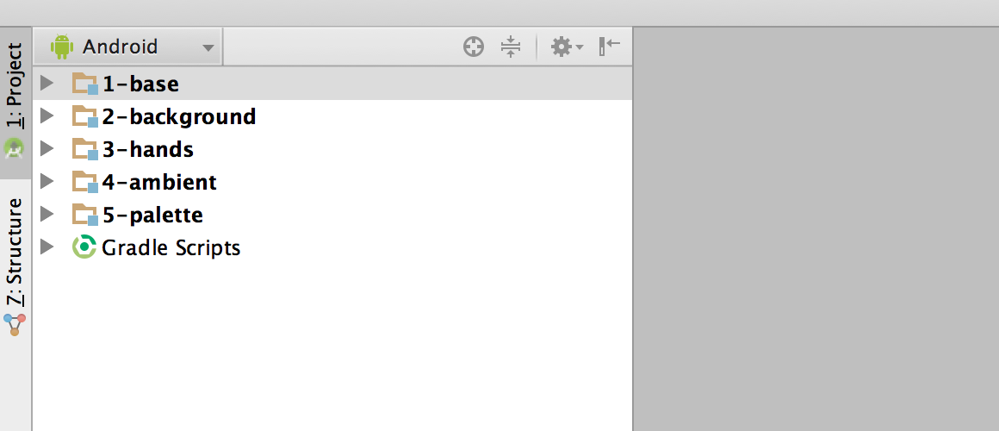
There are five folder icons. Each of them are known as a “module”. Please note that Android Studio might take several seconds to compile the project in the background for the first time. During this time you will see a spinner in the status bar at the bottom of Android Studio:

We recommend that you wait until this has finished before making code changes. This will allow Android Studio to pull in all the necessary components. In addition, if you get a prompt saying "Reload for language changes to take effect?" or something similar, select “Yes”.
Understand the starter project
All right, you’re set up and ready to start creating your own watch face. We’ll set off using the 1-base module, which is the starting point for the watch face that we'll be building upon. You will be adding code from each step to 1-base.
Each of the following modules can be used as reference points to check your work or for reference if you encounter any issues. The number in front of the module name corresponds with the codelab step.
Overview of key components
-
MyWatchFaceService- Our watch face and it has a watch face engine calledMyWatchFaceService.Engine- This file is located in the directory1-base/java/com/android/example/watchface. In Android Studio, this is located under1-base/java/com.android.example.watchface. Within the Engine class, we will mainly be working on three methods: -
onCreate- We will initiate new classes such as the bitmap image object for our background, etc. This code is run once when the Engine is first started. -
onSurfaceChanged- This is the first time when we have the dimension of the screen. Armed with this new information, we can resize any screen element required for drawing. This code is also expected to only be run once at the start. -
onDraw- The core of what we will be doing. It renders every frame on the watch face canvas. Since it runs on every frame, we will try to keep this as fast as possible - no image resizing or object creation here!
-
res/drawable-nodpi/- This is the directory where we will be placing some additional image files.
Emulator setup
If you need help setting up an Android Wear emulator, please refer to the “Set Up an Android Wear Emulator or Device” section of the "Creating and Running a Wearable App" article.
Run the starter project
Let's run it on a watch.
- Connect your Android Wear device or start an emulator.
- In the toolbar, select the “1-base”configuration from the drop down and click the green triangle run button next to it:
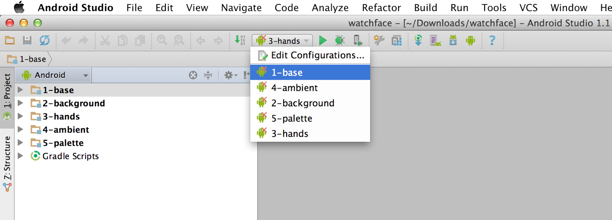
- If the following dialog box comes up, select “Do not launch Activity” and then click Run. Activity is a program that users launch, since watch faces run in the background automatically, there is no activity to run.
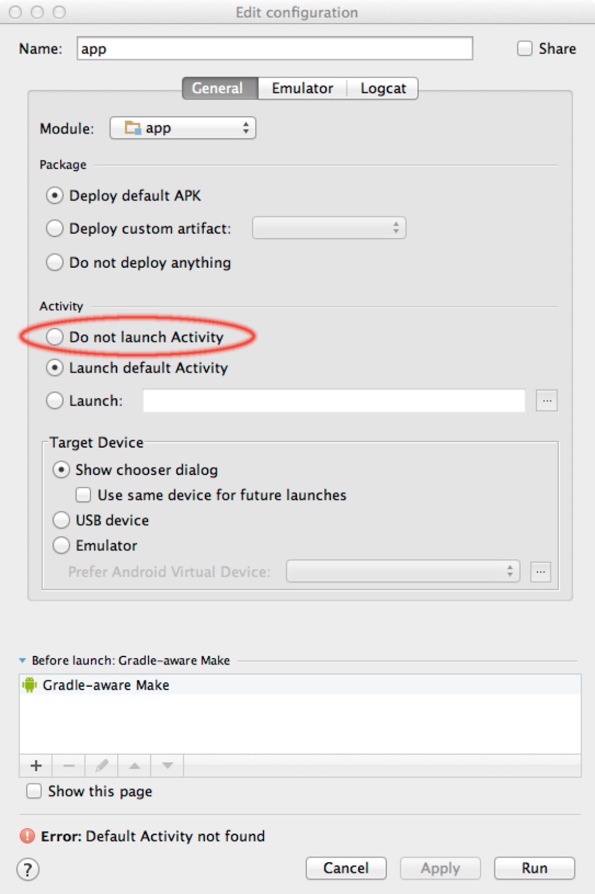
- Select your Android device or emulator and click OK. This will install the watch face on the Android Wear device or emulator.
- After a couple of seconds, your watch face is built and ready to deploy. You will see a spinner in the status bar at the bottom of Android Studio while this is happening:
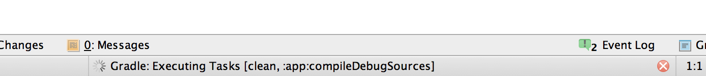
- If it is not already at the “4: Run” tab at the bottom left hand side of Android Studio, select that tab and you can see the installation progress. At the end of the installation process, you should see something similar to this:
Waiting for device.
Target device: sony-smartwatch_3-XXXXXXXXXXXXXX
Uploading file
local path: ~/Downloads/watchface/1-base/build/outputs/apk/1-base-debug.apk
remote path: /data/local/tmp/com.android.example.watchface
Installing com.android.example.watchface
DEVICE SHELL COMMAND: pm install -r "/data/local/tmp/com.android.example.watchface"
pkg: /data/local/tmp/com.android.example.watchface
Success- Once that has happened, long tap on the watch face of your device or emulator.
- Scroll across until you see a watch face labelled “Analog Codelab Watchface”, select it.
- If you do not see this, try deploying the watch face again by pressing the green triangle button in the toolbar.
Here's what it should look like. Don’t worry if your emulator has a cloud with a strikethrough in place of the aeroplane icon. We will not need connection to a phone / internet for this code lab. Also note that the power button to the right might not appear - this is okay!
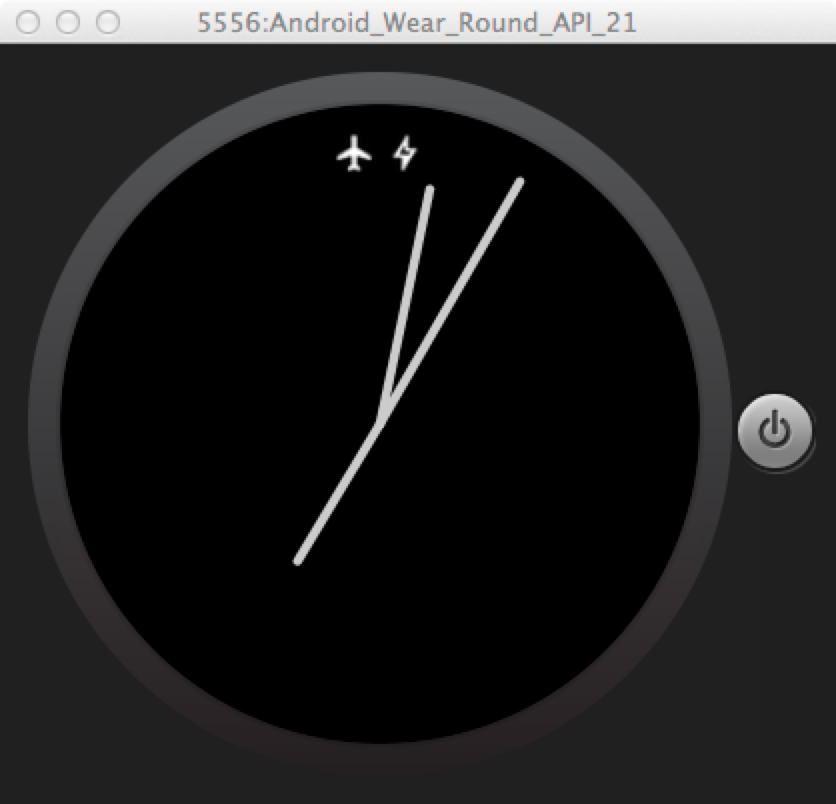
Additional background information - not necessary for code lab
Since Android Studio 1.1, we have added watch face templates, which make it really simple to add watch faces to an existing application. To add watch faces to an existing project:
- Open your existing project
- If it does not have an Android Wear module, add one by selecting, File > New Module. Then select an Android Wear module. Fill in the module name, click next. Select “Add No Activity” and click Finish.
- Go to the Android Wear module, right click on the folder named “java”. Select New > Wear > Watch Face.
- Go through the wizard to add either an analog or digital watch face.
The resulting project will be very similar to “1-base” module in this code lab.
Summary
In this step you’ve learned about:
- Android Wear and the concepts behind watch faces
- The basics of our starting point - 1-base
- How to connect to Android Wear device, deploy the watch face and run it!
Next up
Let’s start making this watch face our own by changing the background.
Code step 2
In this step, we will start making the watch face our own by giving it a background. If at any point you are confused by the concepts discussed here, please refer to the 2-background module and see how these steps may be implemented.
Prepare your image
The first step is to prepare the image. You can select any photograph of your choice, but note that some images with tiny details may not scale well on a small watch display. Crop it to a square shape and resize it to something like 600 x 600 pixels. It can be in jpg or png format. The next step is to rename it to custom_background (Android needs underscore in place of space).
After you completed this, “right click” the res/drawable directory in Android Studio and select “Reveal in Finder” (for Mac) or “Show in Explorer” (for Windows). Copy your image file into the directory res/drawable-nodpi.
If you do not have an image, go to res/drawable-nodpi directory under 2-background - copy the custom_background.jpg image to your res/drawable-nodpi under 1-base.
Create Bitmap and Paint objects
Before we can display the bitmap, we need to load and instantiate the object. Since we only want to do this once and we don’t need the dimension of the screen, we can put this into the onCreate method.
- Create a private Bitmap variable
mBackgroundBitmapin theMyWatchFaceService.Engineclass. This enables other methods to get hold of the Bitmap to resize it and draw later. - In the
onCreatemethod inMyWatchFaceService.Engineclass, we will instantiate the bitmap: - Load the background bitmap:
Resize the Bitmap object
Next we are going to resize the background bitmap. Since dimensions are not available in onCreate, we resize the Bitmap in onSurfaceChanged:
- In onSurfaceChanged method, add code to resize the Bitmap object using the width of the screen (the third parameter of the
onSurfaceChangedmethod) and the width of the background bitmap:
- Scale the background bitmap:
Draw the background
Now that the bitmap is correctly sized - let’s draw it!
- Delete the drawRect code in onDraw which draws a black square which wipes the frame clean.
- Add code to draw the background bitmap in
onDraw. We suggest you place this code directly below the code we deleted in the last step.
Run the watch face again
In the first step, you learned how to install the watch face to your device or emulator. Now it's time to do that again! Your watch face should look something like this:
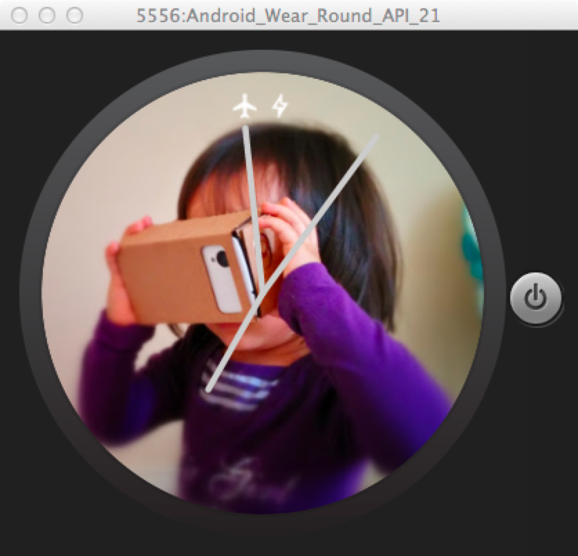
Summary
In this step you’ve learned about:
- Loading a bitmap object
- Resizing it based on the screen dimensions
- Drawing it on the screen!
Next up
Let’s refine the watch arms!
Code step 3
While the current watch hands get the job done, we want to give the watch hands a more premium makeover. In this section, you will learn more about drawing on Android canvas.
Prepare the paint objects
Before an artist starts, they need to mix their color palette and ready their brush. This is what we will be doing:
- Define a private static final float constant
HAND_END_CAP_RADIUSwithinMyWatchFaceService.Engineand set it to 4. Remember to put an “f” after the 4 to indicate that this is a float rather than an integer. - Define a private static final float constant
SHADOW_RADIUSunderMyWatchFaceService.Engineand set it to 6. Remember the “f” - Change the
mHandPaintobject with the following parameters in onCreate: - setShadowLayer with the following parameters:
- radius:
SHADOW_RADIUS - x offset:
0 - y offset:
0 - color:
Color.BLACK -
setStyletoPaint.Style.STROKE- this means we can draw an outline of shapes
Calculate the length of the watch hands
Different watches may have different size screens. Next to scaling the background, as we did in the last step, we also need to work out the watch hand lengths. Since screen dimensions do not change, we can insert the calculation code into the method onSurfaceChanged:
- set hour hand length to be
0.5 * width / 2 - set minute hand length to be
0.7 * width / 2 - set second hand length to be
0.9 * width / 2
Draw the watch hands
Now that all the length calculation is done, it’s time to draw the watch hands. In this section, we will walk you through the code to rotate the watch hands using canvas.rotate rather than using sine and cosine. This simplifies the code tremendously reducing the chance for error, allows more complex layouts as we will see later and leaves the optimisation to Android.
First of all we will prepare the canvas for the first hand we draw - the hour hand. So in the onDraw method:
- Remove the code which draws the current watch hands (simple lines) using
canvas.drawLine()from the linecanvas.save()tocanvas.restore(). We will step you through putting in the new watch hand code in the following steps. - Save the current rotational state of the canvas:
- Rotate to draw the hour hand
The rotate command above means that we have rotated the canvas counter-clockwise by the desired amount. This means we can just draw the hour hand in an upright direction rather than at an angle.
In addition, for our hour hand, instead of a line, we want to draw a hollow paper clip like shape for our watch hands. Before we begin, we need to think a little bit about our design:
- Hollow paper clip - It’s basically a rectangle with two ends where it’s completely round. For our design we have chosen 4px being the radius of the round corners:
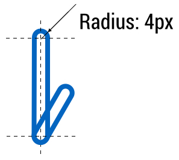
- Next is to think about the offset that we have to put in order for the watch hands to be centered correctly. Without this the watch hands will be centered to the bottom of the whole object rather than the center of the bottom round end. It should come as no surprise that this offset is equal to the radius. In our case, this will be 4 px.
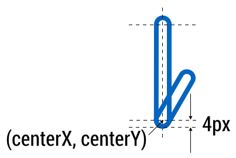
To draw the watch hands:
- Since we need to draw the hour hand and the minute hand in the same way, we create a new private method
drawHand.This will help us only deal with thedrawRoundRectcode once. If there are any mistakes, we can fix it in one place rather than two. For this method we need both the canvas and the length of the hand:
- Back to the onDraw method, we draw the hour hand:
- Next, we rotate the canvas to draw the minute hand, taking into account of the rotation of the hour hand drawn before.
- Draw the minute hand in a similar way to how we draw the hour hand. Remember to feed in the correct hand length
- Rotate to draw the second hand, taking into account of the rotation of the minute hand. Do not worry about the rotation that we made for the minute hand. Remember the bit where we rotate minus the
minuteRotation, with that we have “neutralised” the minute hand rotation and all we need to do in this step is to “neutralise” the hour hand rotation. Lastly, do not worry about the ambient mode code. We will add that in the next section. - Draw the second hand in the center of the screen adjusting for the radius of the hour and minute watch hand. This means there should be a circular area in the center which is transparent:
- Restore the canvas to upright position:
How to check your progress and debug
If you run the watch face now, you should see something like this:
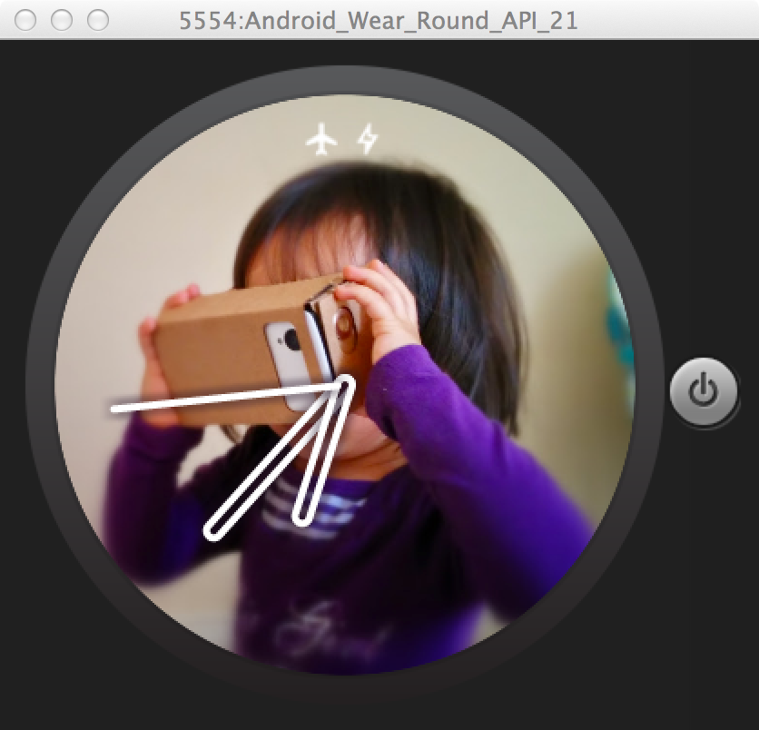
Check that:
- The time is accurate - if you are using the emulator and this is not paired with the phone, the time can be different to the time of your laptop. Check the watch face against another watch face or the time that is shown in the log window in Android Studio. If the logging does not appear, try checking four things:
- At the bottom left, the tab “6: Android” is selected.
- Under devices, the correct device is selected. In the example below, it is “Emulator Android_Wear_Round_API_21”.
- The “Log level” is set to “Verbose”.
- If nothing shows up, select “No Filters”.

- The second hand is moving and the minute hand increments at the 60 seconds mark
It is easy to make mistakes in calculating the rotation angle or setting the center of rotation. If these look odd consider logging these variables and checking the calculation by using
and checking that the value makes sense. For primitives such as int or float, these can be logged directly as shown. For objects such as mTime, you will need to log its String representation by logging mTime.toString() rather than logging mTime. Otherwise,the code will not compile as the method is looking for a String object rather than a Time object.
Before publishing your watch face, we recommend that developers test their design in their daily lives and see that it both works correctly technically and that the design works in all circumstances (indoor / outdoor / stationary / on-the-move).
Perfect the center
Coming back to the current design, you might notice that at the center the shadow of the second hand is on top of the hour hand, and it looks a little out of place. A solution is to add a hollow circle in the middle above the second hand to solve this:
If you run the watch face again, it should look something like this:
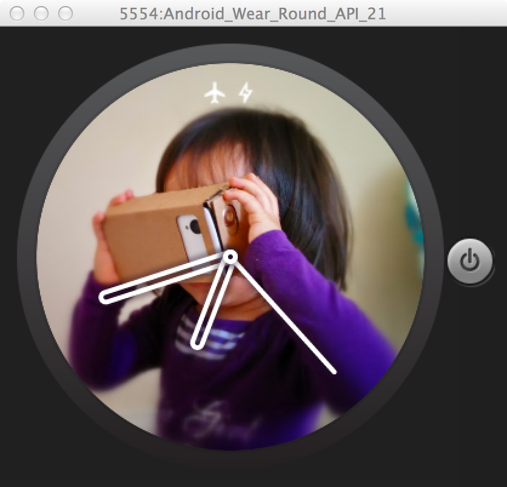
Change the preview image in the watch face selector
In the watch face selector, you can see a preview of the watch face. This can be changed by replacing the preview image - preview_analog.png in the res/drawable-nodpi directory.
Summary
In this step you’ve learned about:
- Setting up paint objects to draw hollow shapes
- Rotating watch arms into the correct position
- Drawing rounded rectangle shapes.
Next up
In addition to interactive mode, Android Wear watches also have an ambient mode which normally has a more discreet design and is only updated once a minute. In the next section, we will learn about how to deal with this.
Code step 4
Aside from the interactive mode, Android Wear also has an ambient mode. Ambient mode helps the device conserve power. We typically recommend developers use black, white, and grays in this mode. Developers may also use limited color but the design should clearly signal that the watch is in ambient mode.
Aside from color differences, another way that ambient mode is different is that the watch face will only be updated once a minute. As a result, screen elements which update more often such as animation or seconds hand should be removed in this mode.
React to ambient mode
Within the MyWatchFace.Engine class, there is a method called onAmbientModeChanged. This method will be called when the watch is going into or out of ambient mode. This gives you a chance to change the design.
For our watch face, we will do three things to the watch face if it does go into ambient mode:
- Change the background to be grayscale
- Remove anti-aliasing of the watch hand paints
- Remove the seconds hand
For 1, we can do this by creating a copy of the bitmap and apply a grayscale filter to it:
- Create a new Bitmap object called
mGrayBackgroundBitmapinMyWatchFaceService.Engine. - Make a copy of the background bitmap and apply a grayscale filter to it. We recommend doing this in a separate method for clarity sake. We will invoke this new method
initGrayBackgroundBitmap()at the end of the method onSurfaceChanged. The method should do the following:
- In onDraw, replace the background image draw code with the following which takes into account of ambient modes:
For 2, we add the following code into onAmbientModeChanged to switch anti-aliasing on and off.
For 3, we update the code in onDraw to put a condition to check if mAmbient is false around the code that rotates and draw the seconds hand. This ensures that the seconds hand is only drawn in interactive mode. This is because the watch face is usually only updated once a minute in ambient mode.
Run the watch face. If you have an emulator, press F7 to toggle between interactive and ambient mode on your keyboard. If you have a physical device, cover the display with your hand. You should see that your watch face looks something like this:
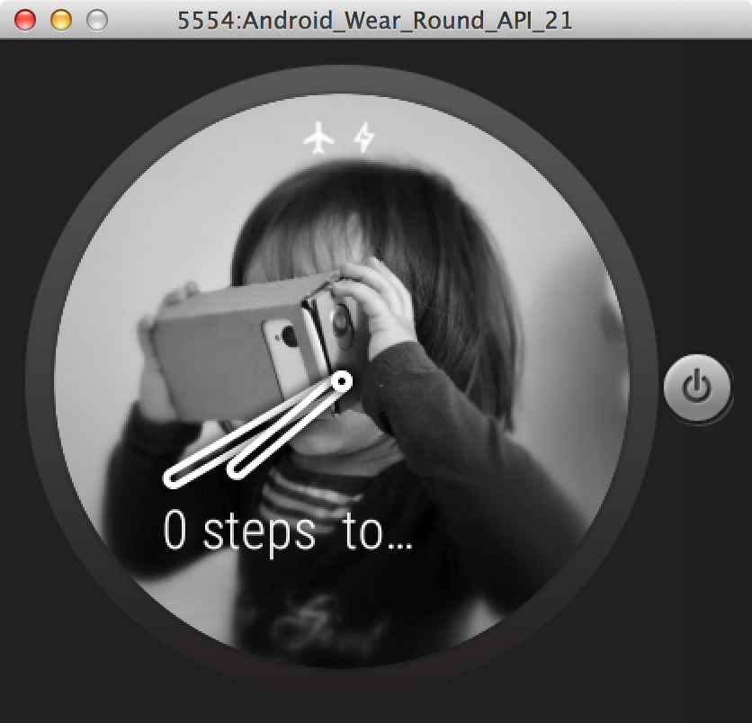
Account for the peek card in ambient mode
In the image above, you can see that there is a peek card saying “0 steps to…”. In this case, the interference with the watch face has not been too bad but in other cases, it may lead to misreading those messages. As a result, we recommend that developers at least put a black rectangle behind the peek card by adding the following:
- Create a Rect variable in
MyWatchFaceService.Enginecalled mCardBounds. Remember to initialise it with new Rect(). Otherwise, when the code first refers to it, it will be null and crash. - Override
onPeekCardPositionUpdatemethod in MyWatchFaceService.Engine:
- Draw a black rectangle below the peek card by adding the following code at the end of the onDraw method:
If you run the watch face now, it should look like this:
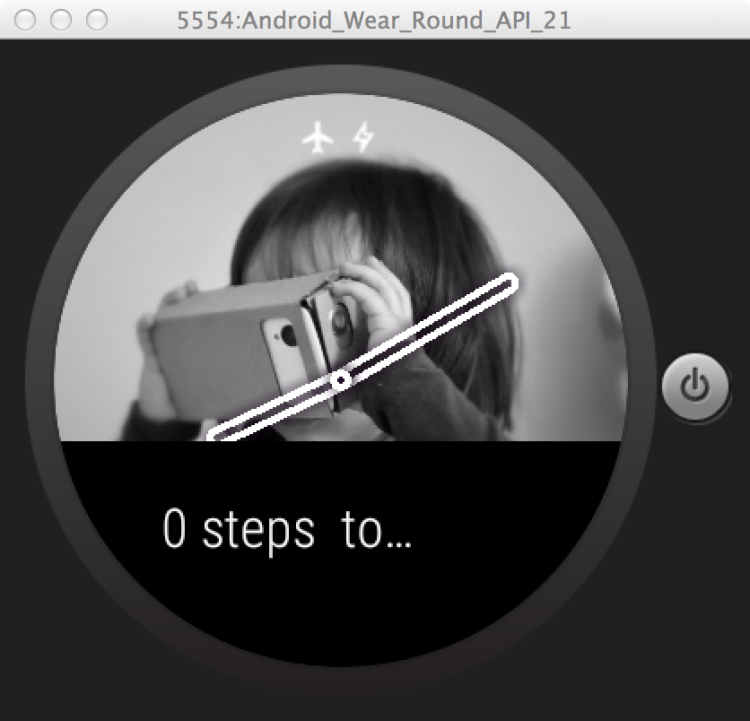
More details (optional): The onPeekCardPositionUpdate actually works in both ambient mode and interactive mode. In interactive mode, the system software takes care of drawing a rectangle behind the card so no work is required. You might ask what is the use of onPeekCardPositionUpdate in interactive mode? With certain designs, by knowing the card boundary you can actually shrink the watch face to the top visible portion of the screen and eliminate all interference.
Account for special screens
In additional to LCD screens, some Android Wear watches support:
- low bit mode - where pixels can only be switched on or off. Since each pixel consists of red, green and blue, it is possible to create some color in this mode but it will be very basic and may not look its best. We recommend developers think about black and white images which may work, or switch off the background altogether.
- burn-in protection mode - some screens such as OLED suffer burn in if the same image is displayed constantly. As a result, we recommend that no more than 5% of the screen should be lit in ambient mode for these watches. Any solid filled areas should be hollowed out. Lastly, for analog watch faces, the center of the watch arms should be hollow so as not to burn in the center pixels.
To keep things simple, we will switch off the background if either of these modes are detected:
- We will create two boolean variables in
MyWatchFaceService.Engineto keep tab of: 1) the low-bit screen mode:mLowBitAmbientand 2) the burn-in protection screen mode:mBurnInProtection. - Add and override the method
onPropertiesChangedinMyWatchFaceService.Enginelike this:
- Replace the background drawBitmap code in onDraw to the following conditional code which only draw the background if these two modes are not detected in ambient mode:
- Also as a refinement to earlier code, we can put a condition into the
onSurfaceChanged()method to only create the grayscale bitmap if the watch is not in low bit or burn in protection mode:
If you run this code on a supported device (e.g. Sony Smartwatch 3 for low-bit ambient mode and LG G Watch R for burn-in protection mode), it should look like the following picture. For the purpose of this code lab, it is okay not to test this. For production, we recommend that you test against devices with these different screens.

Summary
In this step you’ve learned about:
- Taking ambient mode into account
- Making a peek card visible in ambient mode
- Building watch faces for special screens.
Next up
An optional activity to learn about how we can add automatic color selection into our code, so that the watch hand color will automatically work with the background.
If you still have time but don’t fancy having a go at the palette API, we encourage you to alter the different parameters of the screen elements, for example, stroke size, the radius of the watch arms, color of the various screen element, etc. Let’s see what you get!
Code step 5
As part of the Android 5.0 Lollipop launch, we have added a Palette API which helps automatically select the accent color of a bitmap. We will be using this API for automatically selecting the color of the watch hands. Outside of watch faces, you can use it to generate dynamic color schemes based on the user’s input and fulfil one of the creative visions of material design - a new cross platform design language.
Determine key colors of a bitmap
We will need to initiate the Palette object, feed our background bitmap to it and get it to analyse the result:
- Open “build.gradle (Module: 1-base)” file under Gradle Scripts:
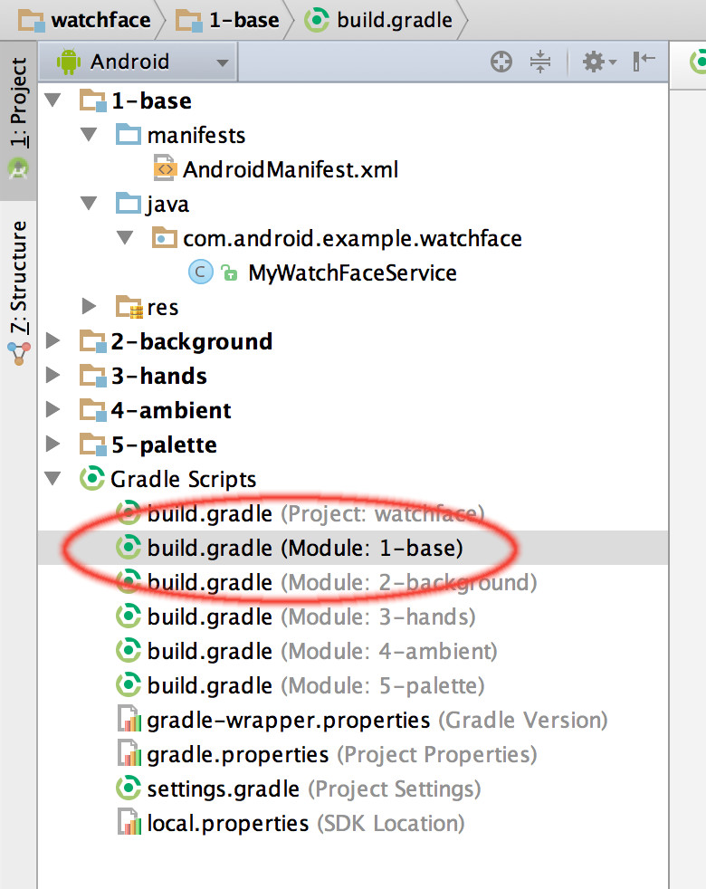 - Add the following to the dependencies section towards the end of the “build.gradle (Module: 1-base)” file:
- Press blue “Sync Now” at the top - this will trigger a rebuild and palette will be available for use.

- Create two int variable mWatchHandColor and
mWatchHandShadowColorinCanvasWatchFaceService.Engineto store the colors. Initiate them withColor.WHITEandColor.BLACKrespectively. - Instantiate a Palette in
onCreateafter themBackgroundBitmaphas been loaded:
- Add a new private method in
MyWatchFaceService.Engineto set the color of the watch hands
- Call the
setWatchHandColor()method before invalidating the frame inonAmbientModeChanged
Run the watch face again
Your watch face should look something like this:
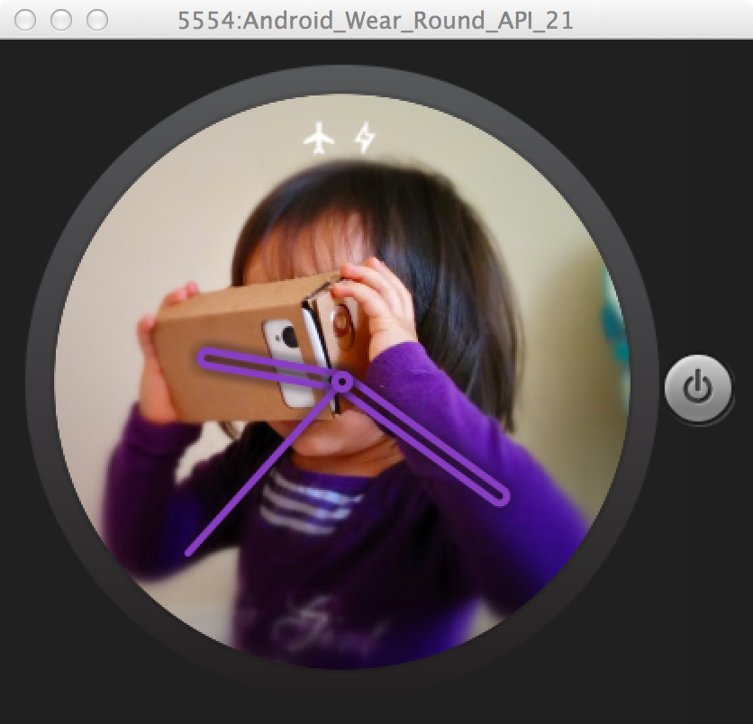
If you copy over the custom_background2 image from the module “5-palette” to “1-base” and change the backgroundResId to custom_background2, you should see a watch face similar to this:
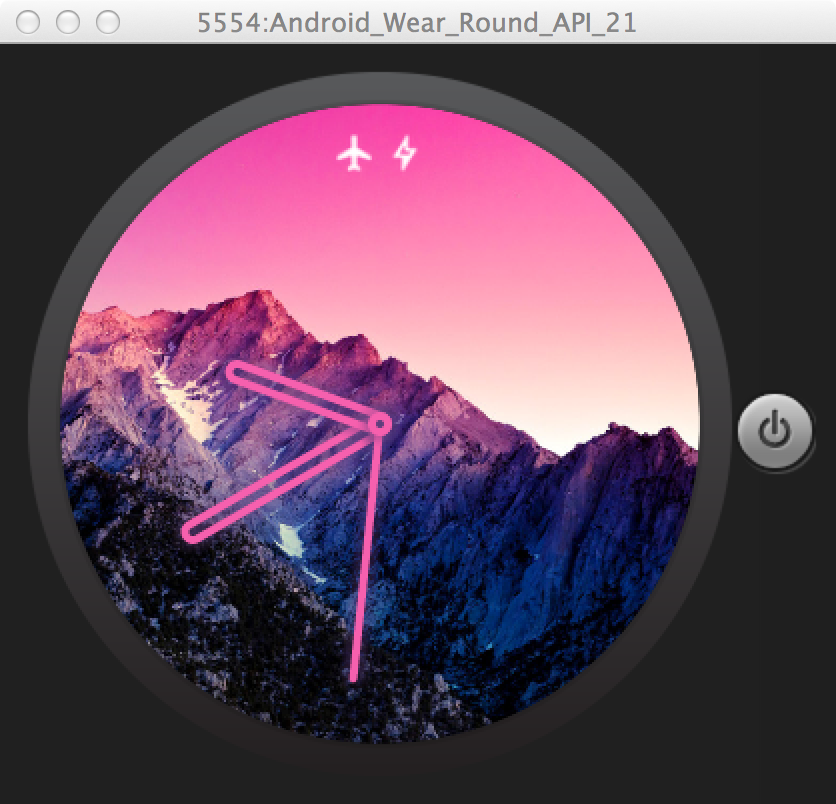
Summary
In this step you’ve learned about:
- How to select color schemes automatically using the Palette API
- Setting the screen elements color accordingly
For more details about developing Android Wear notification and apps:
https://developer.android.com/training/building-wearables.html
For more details about developering Android Wear watch faces, visit https://developer.android.com/training/wearables/watch-faces/index.html
Here are some of the common customisation steps for watch faces:
- Positioning status icons, the charging icon (the lighting bolt), “Ok Google”, etc:
- Refer to the WatchFaceStyle.Builder documentation for various options from setting gravity to making a semi-transparent background so that they are readable against the watch face.
- Putting the watch face on the Google Play Store
- First, get set up on the Google Play Store if you don’t have an account already.
- Second, package the watch face with a mobile app.
- Third, upload to the Play Store.
- What about digital watch faces?
- Use the Android Wear watch face template in Android Studio. Please note that this will require Android Studio version 1.1 or above. This will help you get the skeleton code:
- Start a new project or open your existing project
- Create a new Android Wear module with no activity if your project does not already have it.
- Right-click on the module name on the left hand side. Select New > Wear > Watch Face
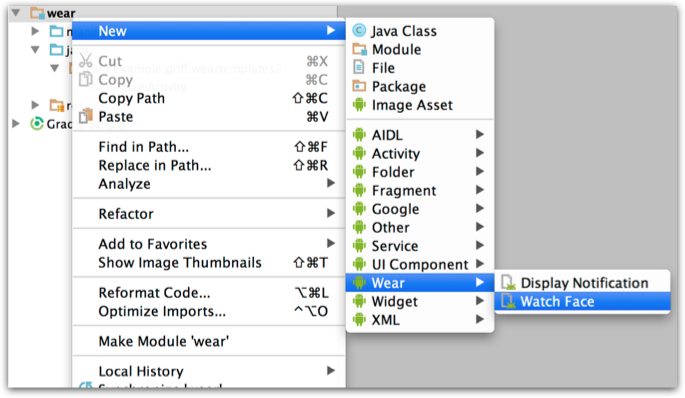
- Select the digital watch template.
- Watch these great videos:
DevBytes: Developing an Android Wear Watch Face
DevBytes: Watch Faces for Android Wear
- Take the Ubiquitous Computing Online course